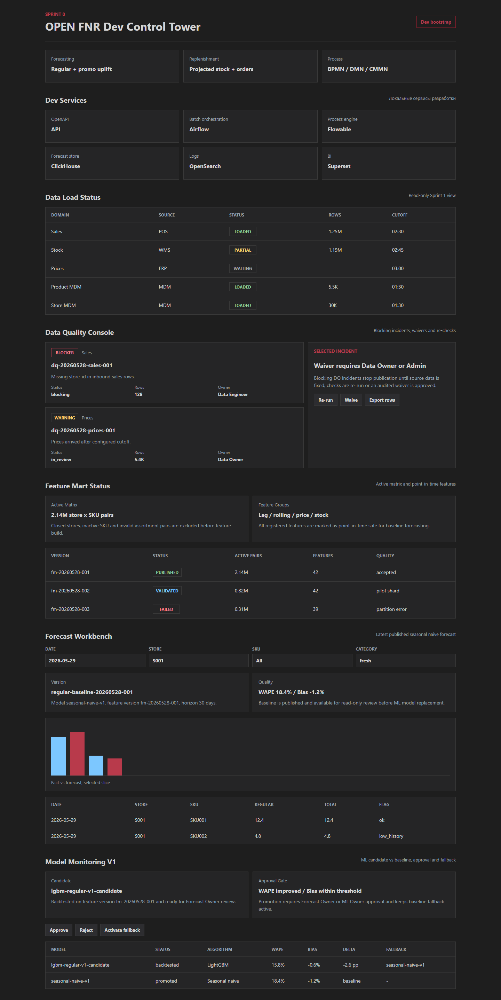

OPEN FNR / Sprint 6 / ML Regular Model V1
Отчёт по UI-тестированию и тестированию бизнес-процессов
Отчёт фиксирует тестовый цикл Sprint 6: candidate ML-модель регулярного спроса, сравнение с baseline, approval/promotion и fallback на baseline.
Аннотация теста
Мы тестируем ML Regular Model V1, потому что после baseline forecast система должна показать управляемое улучшение качества, а не просто новую модель. Метод проверки объединяет API-контракты модели, comparison metrics, approval rules, BPMN/DMN/CMMN artifacts, UI screenshot и regression tests. Такой способ нужен, чтобы доказать: ML-кандидат лучше baseline, имеет fallback, а promotion требует роли Forecast Owner или ML Owner.
Автоматические проверки
| Проверка | Что делаем | Зачем | Ожидаемый результат | Фактический результат |
|---|---|---|---|---|
python -m pytest |
Запускаем backend, ML, process, data и encoding тесты. | Проверить model metadata, comparison, approval, fallback и process artifacts. | Все тесты проходят. | 51 passed |
npm.cmd run build |
Собираем React/Vite UI. | Проверить Model Monitoring V1 и approval actions. | Сборка завершается без ошибок. | vite build completed |
| Playwright screenshot | Открываем UI и снимаем full-page screenshot. | Зафиксировать визуальный результат ML monitoring. | Скриншот содержит candidate, baseline, WAPE/Bias и fallback. | Скриншот сохранён |
UI-тестирование
| Шаг | Что делаем | Зачем | Почему именно так | Ожидаемый результат | Фактический результат |
|---|---|---|---|---|---|
| 1 | Открываем Model Monitoring V1. | Проверить, что пользователь видит ML-кандидат рядом с baseline. | Forecast Owner должен принимать решение на сравнении, а не на имени модели. | Отображаются candidate и baseline model versions. | Отображаются. |
| 2 | Проверяем WAPE/Bias и delta. | Понять, действительно ли ML лучше baseline. | WAPE является основной метрикой приёмки, Bias контролирует систематическое смещение. | Видны WAPE 15.8%, Bias -0.6%, delta -2.6 pp. | Видны. |
| 3 | Проверяем approval actions. | Подтвердить пользовательский workflow approve/reject/fallback. | Promotion модели должен быть управляемым действием с ролью и audit. | Видны Approve, Reject, Activate fallback. | Видны. |
| 4 | Проверяем fallback. | Убедиться, что при деградации можно вернуться к baseline. | Fallback снижает риск промышленных запусков ML. | Candidate показывает fallback seasonal-naive-v1. | Отображается. |
Тестирование бизнес-процессов
| Процесс | Шаг | Что делаем | Зачем | Ожидаемый результат | Фактический результат |
|---|---|---|---|---|---|
model_candidate_review_process |
1 | Стартуем процесс после регистрации модели. | Каждый ML-кандидат должен проходить управляемый lifecycle. | BPMN содержит start event Model registered. | Подтверждено XML-тестом. |
model_candidate_review_process |
2 | Запускаем backtesting. | Решение approval должно опираться на воспроизводимые метрики. | BPMN содержит Run model backtesting. | Подтверждено XML-тестом. |
model_candidate_review_process |
3 | Отправляем модель на approval или reject. | Promotion не должен быть автоматическим без владельца. | BPMN содержит Approve model candidate и Reject model candidate. | Подтверждено XML-тестом. |
model_approval_decision |
1 | Проверяем DMN approval rule. | Критерии promotion должны быть вынесены из кода. | DMN требует улучшения WAPE, Bias threshold и fallback. | Подтверждено XML-тестом и API comparison. |
model_degradation_case |
1 | Проверяем CMMN degradation case. | При деградации нужны investigation, fallback и retraining. | CMMN содержит Investigate model degradation и Activate baseline fallback. | Подтверждено XML-тестом. |
Скриншоты

Скриншот: Model Monitoring V1 после Sprint 6.
Вывод
Sprint 6 test cycle passed. ML-кандидат регулярного спроса зарегистрирован, сравнивается с baseline, имеет fallback, approval role gate и процесс promotion/degradation.
Ограничение: модель представлена metadata и backtesting contract; физический training/inference job и MLflow integration будут расширяться в следующем ML-инкременте.